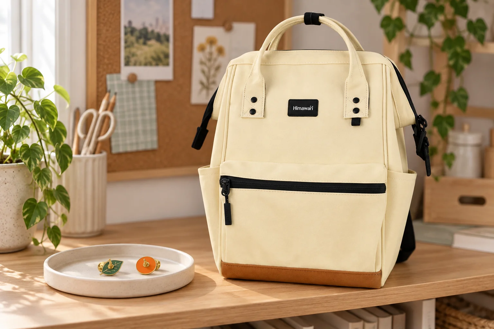

백팩에 배지를 달기 전, 뒷면부터 살펴보세요

작은 배지 하나로 백팩 앞면의 분위기를 바꾸고 싶을 때가 있습니다. 앞면의 그림만 보고 위치를 정하기 전에 배지 뒷면과 가방 안쪽을 함께 보세요. 키링처럼 고리에 거는 장식과 달리 핀 배지는 원단을 통과시키는 방식일 수 있습니다. 눈에 잘 보이는 자리인지보다, 어떤 흔적이 남고 안쪽에서 무엇과 닿는지가 먼저 확인할 점입니다.
고정 장치가 있는지, 제대로 맞는지 봅니다
배지를 손에 들고 뒷면의 핀과 고정 장치를 확인합니다. 핀 끝을 덮는 부품이 없거나 잘 맞지 않는다면 그 상태로 가방에 달지 마세요. 배지의 사용 안내도 함께 살펴봅니다. 손으로 잡는 부분 밖으로 뾰족한 끝이 남지 않도록 다루고, 사용하지 않는 배지는 고정 장치를 채워 따로 보관합니다.
가방 겉면과 안쪽을 동시에 살펴봅니다
부착을 고려하는 위치의 뒤쪽이 어디로 이어지는지 확인합니다. 안감이나 수납칸까지 함께 통과하면 안쪽에 손을 넣을 때 고정 장치가 닿거나 물건이 걸릴 수 있습니다. 지퍼 길, 손잡이 연결부, 어깨끈처럼 움직임이나 힘이 모이는 위치를 장식 자리로 삼지는 마세요. 사진에 보이는 No.124S에도 별도 배지 부착용 보강이 있다는 자료는 확인되지 않았습니다.
구멍을 남기고 싶지 않다면 원단을 찌르지 않습니다
핀을 빼면 가방이 원래대로 돌아온다고 생각하기 쉽지만 원단에 흔적이 남을 수 있습니다. 새 가방이나 겉면 상태를 유지하고 싶은 가방이라면 원단을 통과시키는 부착 자체를 하지 않는 선택도 가능합니다. 가지고 있는 별도 배지 보관판이나 배지 부착용 소품에 달아두세요. 접착제나 테이프로 고정 장치를 대신하면 흔적이 남지 않을 것이라고 단정할 수도 없습니다.
가방을 비우는 날에는 장식도 따로 점검합니다
이미 달아둔 배지가 있다면 겉면만 보지 말고 안쪽 고정 장치가 그대로 있는지도 확인합니다. 가방을 관리하거나 보관할 때는 배지 안내에 맞춰 분리하고, 분리한 핀과 고정 장치를 한곳에 둡니다. 참조 제품 No.124S의 외부 크기는 가로 22 × 세로 33 × 폭 14cm입니다. 이 치수는 장식을 달 수 있는 위치나 원단의 부착 적합성을 알려주는 수치가 아닙니다. 가방 장식은 제품의 실제 구조와 관리 안내를 기준으로 결정하세요.
참고·안내
- Himawari No.124S 제품 정보
- 실제 Himawari No.124S 옐로우 제품을 참조한 AI 연출입니다. 배지는 별도 소품으로 가방에 부착하지 않았으며, 배지 부착용 보강이나 구성품이 있다는 뜻이 아닙니다.
자주 묻는 질문
핀 배지를 뺀 뒤에는 흔적이 없어지나요?
원단과 부착 방식에 따라 흔적이 남을 수 있습니다. 가방 표면을 유지하고 싶다면 핀으로 원단을 통과시키지 않는 편이 명확합니다.
사진의 배지가 가방 구성에 포함되나요?
사진의 배지는 AI 연출 소품이며 가방에 부착하지 않았습니다. 판매 구성과 실제 옵션은 연결된 제품 상세에서 확인해주세요.